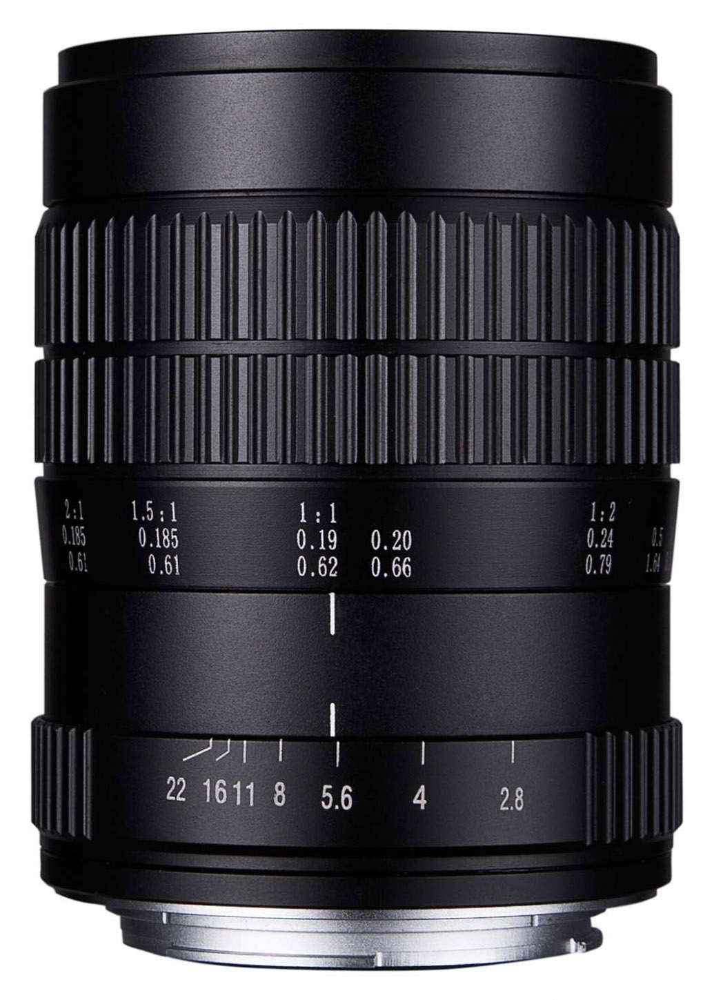
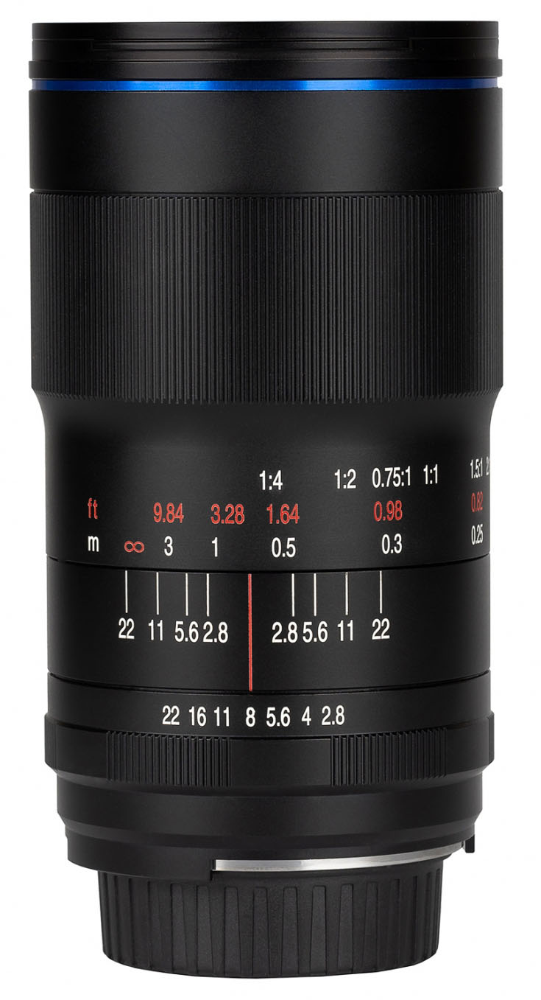
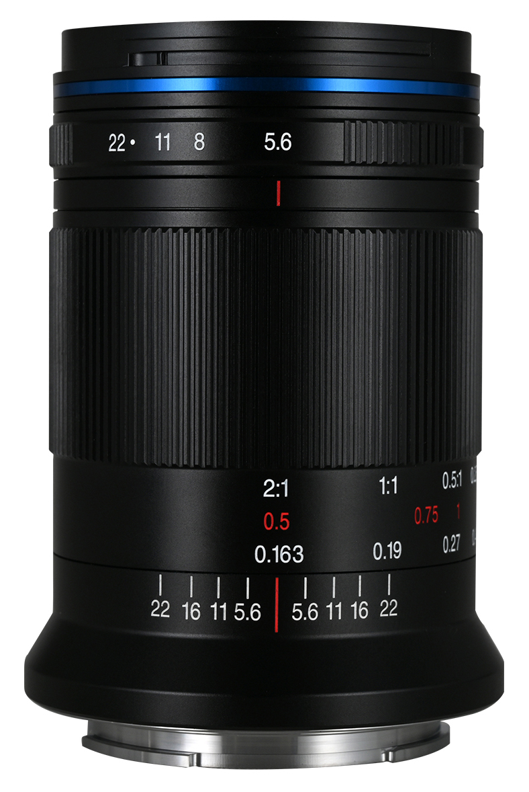
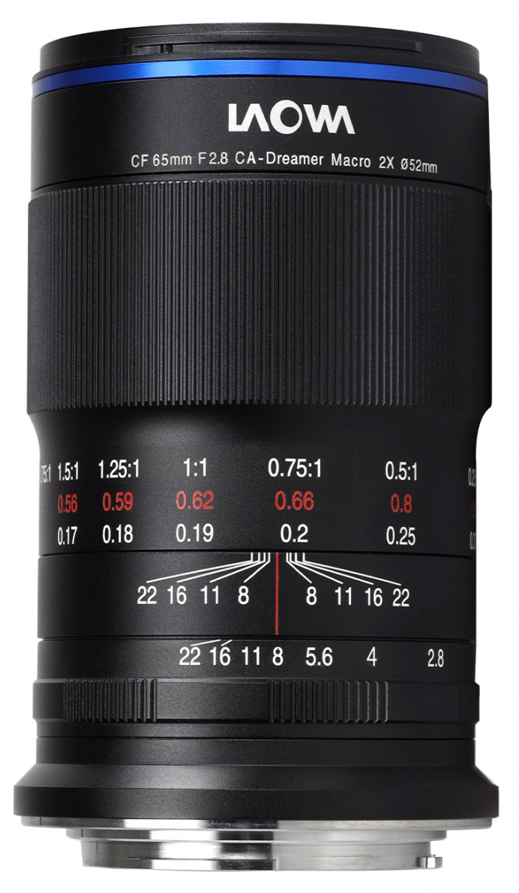
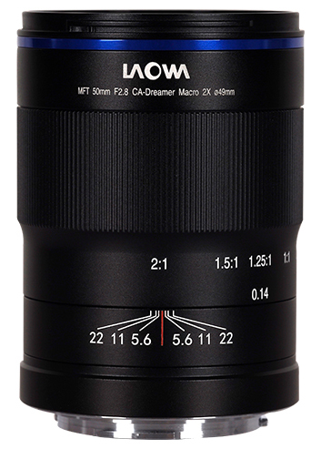

Micael's recommendation:
I recommend the Laowa 60mm lens...
I recommend buying the lens at Laowa's official website. I always buy my Laowa lenses directly from there, as they often aren't in stock locally, and as they offer the best price, as well as fast and free worldwide shipping. Please use this link to buy the Laowa 60mm as it gives me a small commission at no extra cost to you.
Micael's recommendation:
I recommend the Laowa 100mm lens...
I recommend buying the lens at Laowa's official website. I always buy my Laowa lenses directly from there, as they often aren't in stock locally, and as they offer the best price, as well as fast and free worldwide shipping. Please use this link to buy the Laowa 100mm as it gives me a small commission at no extra cost to you.
Micael's recommendation:
I recommend the Laowa 85mm lens warmly to anyone with a full frame camera, who wants an excellent 2x macro lens that is extremely small and lightweight, and who doesn't need the wide f/2.8 aperture that most other macro lenses offer.
I recommend buying the lens at Laowa's official website. I always buy my Laowa lenses directly from there, as they often aren't in stock locally, and as they offer the best price, as well as fast and free worldwide shipping. Please use this link to buy the Laowa 85mm as it gives me a small commission at no extra cost to you.
Micael's recommendation:
If you have an APS-C mirrorless camera and no plans to upgrade to full frame anytime soon, the Laowa 65mm is the lens I would strongly recommend.
I recommend buying the lens at Laowa's official website. I always buy my Laowa lenses directly from there, as they often aren't in stock locally, and as they offer the best price, as well as fast and free worldwide shipping. Please use this link to buy the Laowa 65mm as it gives me a small commission at no extra cost to you.
Micael's recommendation:
If you have a micro-four thirds camera this is the Laowa macro lens you should get. There is no good point trying to buy any of the other lenses and trying to convert them to MFT, when there is a lens especially made for MFT, optimized in size and optics.
I recommend buying the lens at Laowa's official website. I always buy my Laowa lenses directly from there, as they often aren't in stock locally, and as they offer the best price, as well as fast and free worldwide shipping. Please use this link to buy the Laowa 50mm as it gives me a small commission at no extra cost to you.
The most common question I get from my Youtube subscribers and Instagram followers on a daily basis is "what Laowa macro lens should I buy?"
So I have created this simple form where you answer some basic questions about your camera and what you want to use the lens for, and I will give you my recommendation. This is what I normally do when answering your questions about this anyway, so now I can outsource that work to this little webpage. :)
Please let me know if you find a bug or have other questions.
/Micael